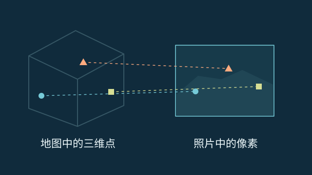

序言
朋友发来一张车站照片。你先认出墙砖与标牌的风格，大致猜到哪个站，再根据柱子和出口的相对位置找到拍摄点。视觉重定位也把“可能在哪里”和“镜头究竟站在哪里、朝哪里看”分成不同的计算。
先把可能的地点缩到几处
建图时保存一些参考照片，记住拍摄位姿，以及图中哪些像素对应地图里的三维路标。重定位时收到的新照片称为查询图像。图像级描述子把一张图的整体外观压缩成便于比较的一组数。用它检索参考照片可以迅速缩小范围，选出的多个候选仍需逐一核实。
例如两层楼有相同墙色、相同间距的门，检索把它们都排到前面完全合理。若过早只留下第一名，则后面的几何计算再精确，也无法找回已经舍弃的楼层。参考图的拍摄位置本身也不是查询相机的位置；两人可以从不同地点看见同一块站牌。
让站牌上的角点接到三维地图
局部特征由位置和描述子组成。位置回答“在图上哪里”，描述子描述周围纹理。SuperPoint 可以提取这两类信息，LightGlue 可以根据两图特征推断匹配。假设查询图上一个像素匹配到参考照片中的出口标牌左上角，且地图已记录该角点的三维坐标。这样就得到一条二维像素与三维路标的对应。
收集分布在画面不同位置的对应关系，再结合相机内参，PnP 方法可估计地图到相机的旋转和平移。实际匹配混有错误。RANSAC 每次从部分对应中求一个候选位姿，再把所有三维点投到图上，数有多少落在各自观测像素附近。被该模型解释的观测称为内点。内点数量和所占比例都是线索，还须检查它们在画面上的分布。


一次随机抽样能得到多少信心
假设一批对应中只有一半正确，教学例子里每次随机抽四组来提出位姿候选，并近似把每次抽取看成独立。一次四组全对的概率约为 (1/2)⁴ = 1/16。连续抽 48 次，至少有一次全对的概率约为 1 − (15/16)⁴⁸ ≈ 95.5%。这是理解随机采样代价的例子，具体 PnP 算法的最小样本数、退化情形和成功判据并不都相同。
全对的一组点也不一定给出稳定解。例如它们在图像中挤得很近，微小的像素偏差便会带来较大的位姿变化。提出候选后还要用全部对应检验，并检查正深度、内点覆盖和剩余误差。仅把迭代次数调大，不能替代高质量匹配或增加几何跨度。
用一个没有参加求解的位置复核
假设一排窗户投影误差都小于两像素。因为窗格重复，同样的误差也可能出现在相邻窗格对齐的错误位姿上。这时可以选远处的消防栓或独特的柱角作为额外检查，看看它的预测像素是否也重合。如果所有内点都挤在右上角，画面另一半的结构就格外值得复核。
若查询图有对齐到同一相机的深度，还能比较沿光轴的距离。假设某一点预测为 3.0 米，观测为 1.8 米，差 1.2 米。先检查它是否处在遮挡边缘、深度单位是否一致，再考虑候选位姿有误。记录多少位置有有效深度也很重要，只有一个像素重合还不能证明整个位姿可信。最后连续移动拍两张相邻图，各自定位，看看估计的相对运动是否与真实拍摄动作一致。
从候选集合定位失败环节
可以故意挑两张外观相近但地点不同的查询照片，另外再选一张与地图真实重叠的照片。先只看检索结果，记下真实重叠参考图是否进入候选。接着看局部匹配，分别统计能连到地图三维点的对应数和通过几何验证的内点数。若有许多好看的二维连线，却几乎都没有对应的三维路标，PnP 仍然缺少输入。
最后把估计位姿画成相机中心与朝前箭头，而不只是一个平移向量。PnP 常给出地图到相机的变换，要画镜头在地图中的位置须先取逆。再选一个没有参加求解的三维角点投回照片，可以同时核查姿态方向和相机参数。